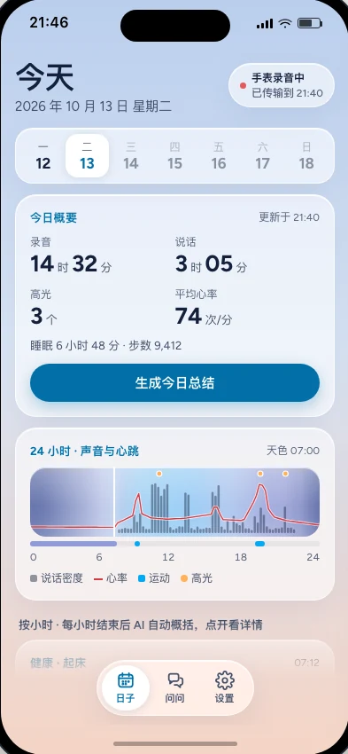
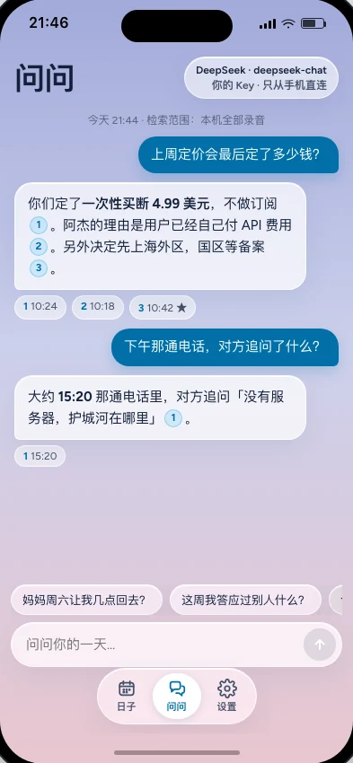

Record on your watch
Start on Apple Watch, then go about your day. It keeps recording with the screen off, in 5-minute segments. Tap the ring to mark a moment.
Earmark · a little more present
Turn your Apple Watch into an all-day recorder. Ask your day anything.
Download on theApp StoreUS $4.99 · One-time purchase. No subscription.
iOS 26+watchOS 26+


01 / The everyday
09:00From the first conversation to the last good idea. A simple path from your wrist to the words you want to find.
Start on Apple Watch, then go about your day. It keeps recording with the screen off, in 5-minute segments. Tap the ring to mark a moment.
Audio moves to your paired iPhone. Silence is skipped, and Apple’s on-device speech recognition turns speech into searchable text.
Use your own AI provider to ask about your day. Answers stream in with citations that take you to the exact original audio, while it’s retained.
02 / Room for your whole day
13:00A day is more than a recording. Earmark helps you find a sentence, revisit a decision, and hear what was actually said.
Browse Days by hour. Optional AI summaries and topics help you scan the conversation; generate a full day summary whenever you choose.
A thought worth keeping? Tap the ring on your watch. Your marks carry through to highlights on iPhone.
Full-text search runs locally. Go from a remembered phrase to its transcript, then replay the source audio while it’s available.
Ask about your day with your own AI provider. Follow a timestamped citation to the original sentence and its audio.
Hold the Ask input to dictate on-device. Release to send the recognized text; the question’s audio is never saved.
Audio expires after your chosen retention period: 30 days by default. Transcripts stay readable. Delete your entire library in Settings.
03 / Yours, from the start
17:00Your recordings live on your devices. Earmark has no account to create, no app servers, and no analytics, ads, or tracking SDKs.
Read our privacy policyThere’s no Earmark cloud holding your day. Recordings transfer directly from your watch to your paired iPhone.
Apple’s on-device speech recognition handles transcription. Earmark does not sync your library to iCloud.
Optional AI sends relevant text directly to the provider you choose. Audio and Apple Health data are never sent to AI.
04 / A few things to know
A few everyday questions, answered.
Visit SupportNo. Earmark is a paid download: US $4.99, paid once. Prices in other regions follow local App Store pricing. Your AI provider may charge separately for API usage.
Recording, on-device transcription, browsing, and full-text search work without AI. For Ask and AI summaries, choose a provider and add your own API key in Settings. A model with streaming tool-call support is needed for Ask.
When you ask a question or generate a day summary, relevant text goes directly to your selected provider. Automatic hourly summaries are on by default after you configure a provider, and send each finished, transcribed hour’s text. Turn them off in Settings at any time.
An Apple Watch running watchOS 26 or later and a paired iPhone running iOS 26 or later. The watch does the all-day recording; the iPhone receives, transcribes, and lets you explore it.
The watch transfers audio in 5-minute segments when your paired iPhone is nearby. Open Earmark on iPhone to help transfers along. You can also request a sync from the watch status panel or Settings.
Earmark is launching outside mainland China first. Mainland China availability will follow after the required app filing is complete. No release date has been announced.
Only where it is lawful and with any required consent. You are responsible for following local recording laws and respecting the privacy of the people around you.
Earmark for Apple Watch & iPhone. Made by txxy.